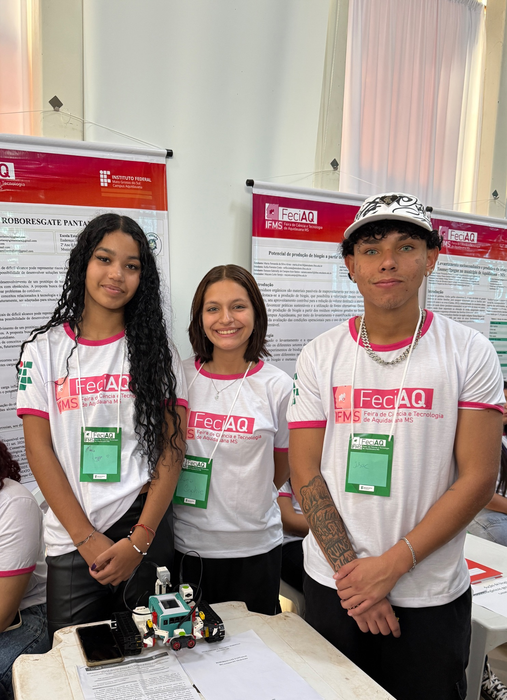
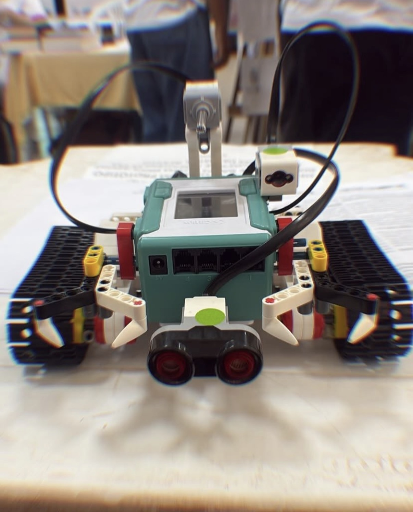

ROBÓTICA EDUCACIONAL · PESQUISA CIENTÍFICA
RoboResgate
Pantanal
Tecnologia de baixo custo para explorar caminhos e apoiar o transporte de pequenos suprimentos em situações simuladas de emergência.
01 / CONTEXTO
Introdução

O Pantanal brasileiro é reconhecido por sua grande biodiversidade, porém enfrenta desafios frequentes relacionados às enchentes, queimadas e ao difícil acesso a diversas regiões. Nessas situações, o deslocamento de equipes de resgate pode ser comprometido pelas condições do terreno, tornando necessária a utilização de tecnologias que contribuam para reduzir riscos e ampliar a eficiência das operações. A Organização das Nações Unidas para a Redução do Risco de Desastres destaca que o emprego de tecnologias inovadoras fortalece a prevenção, o monitoramento e a resposta a emergências (UNDRR, 2025).
Nesse contexto, a robótica educacional constitui uma importante ferramenta para integrar conhecimentos de programação, eletrônica, física e engenharia, favorecendo o desenvolvimento do pensamento computacional e da resolução de problemas (Nascimento; Gomes; Coelho, 2026).
Diante dessa realidade, surgiu o projeto RoboResgate Pantanal, que tem como objetivo desenvolver um protótipo robótico de baixo custo, utilizando exclusivamente componentes disponíveis no laboratório de robótica da Escola Estadual Dona Rosa Pedrossian, capaz de auxiliar futuramente no transporte de pequenos suprimentos e na exploração de áreas de difícil acesso durante situações simuladas de emergência.
02 / DESENVOLVIMENTO
Metodologia
A pesquisa caracteriza-se como tecnológica, aplicada e experimental. Nesta primeira etapa, os estudantes realizam levantamento bibliográfico sobre robótica aplicada ao atendimento de emergências, sistemas embarcados, sensores eletrônicos e plataformas Arduino, buscando compreender as tecnologias utilizadas em robôs móveis e definir os requisitos necessários para o desenvolvimento do protótipo (Arduino, 2026).
Paralelamente, estão sendo desenvolvidos estudos sobre as características ambientais do Pantanal, especialmente os impactos das enchentes e queimadas na mobilidade das equipes de resgate, permitindo contextualizar a aplicação do projeto.
Após essa etapa de pesquisa, será iniciada a fase de construção do RoboResgate Pantanal utilizando exclusivamente os materiais disponíveis no laboratório da escola, como placas Arduino, motores DC, driver de motores, sensores ultrassônicos, rodas, chassis e demais componentes eletrônicos.
Na sequência, o protótipo será submetido a testes em um circuito experimental construído pelos próprios estudantes, simulando obstáculos semelhantes aos encontrados em áreas alagadas ou afetadas por queimadas. Serão avaliados critérios como estabilidade, mobilidade, capacidade de carga, autonomia, desvio de obstáculos e eficiência operacional.
Critérios de avaliação previstos
- Estabilidade
- Mobilidade
- Capacidade de carga
- Autonomia
- Desvio de obstáculos
- Eficiência operacional
03 / ANDAMENTO
Resultados e análise

Até o momento, a pesquisa encontra-se na fase de fundamentação teórica, planejamento do protótipo e realização de testes preliminares com componentes eletrônicos disponíveis no laboratório de robótica.
Os estudos realizados permitiram identificar que a plataforma Arduino apresenta baixo custo, facilidade de programação e ampla aplicação em projetos de robótica educacional, sendo indicada para o desenvolvimento de protótipos destinados à aprendizagem e à resolução de problemas reais (Silva; Scherer, 2013).
A revisão bibliográfica também evidenciou que robôs móveis têm sido empregados como ferramentas auxiliares em operações de inspeção, monitoramento e apoio ao transporte de materiais em ambientes considerados inseguros para a atuação humana, demonstrando potencial para aplicações em situações de emergência (UNDRR, 2025).
Como resultados parciais, os estudantes definiram os componentes eletrônicos que serão utilizados na construção do protótipo e elaboraram o planejamento estrutural do RoboResgate Pantanal, estabelecendo as etapas de montagem, programação e validação experimental.
Espera-se que, após sua construção, o protótipo seja capaz de deslocar-se por terrenos com obstáculos, transportar pequenos suprimentos e servir como ferramenta didática para estudos relacionados à robótica aplicada à resolução de problemas da realidade regional.
04 / PERSPECTIVAS
Considerações finais
Embora o projeto ainda esteja em fase de desenvolvimento, observa-se que as atividades de pesquisa vêm proporcionando aos estudantes a integração entre conhecimentos de Robótica, Física, Matemática, Programação e Engenharia, além do fortalecimento das competências relacionadas à investigação científica e ao trabalho colaborativo.
As próximas etapas compreenderão a construção do protótipo, a programação dos sistemas de controle, a realização dos testes experimentais e a análise dos resultados obtidos. Espera-se que o RoboResgate Pantanal demonstre a viabilidade do desenvolvimento de soluções tecnológicas de baixo custo utilizando exclusivamente os recursos disponíveis no laboratório de robótica da escola, contribuindo tanto para a formação científica dos estudantes quanto para a discussão de tecnologias aplicadas a situações de emergência na região do Pantanal.
05 / APOIO À PESQUISA
Agradecimentos
À Escola Estadual Dona Rosa Pedrossian, pela disponibilização do laboratório de robótica e dos equipamentos utilizados na pesquisa; às professoras orientadoras pelo acompanhamento científico; e à Secretaria de Estado de Educação de Mato Grosso do Sul pelo incentivo às práticas de pesquisa e inovação na Educação Básica.